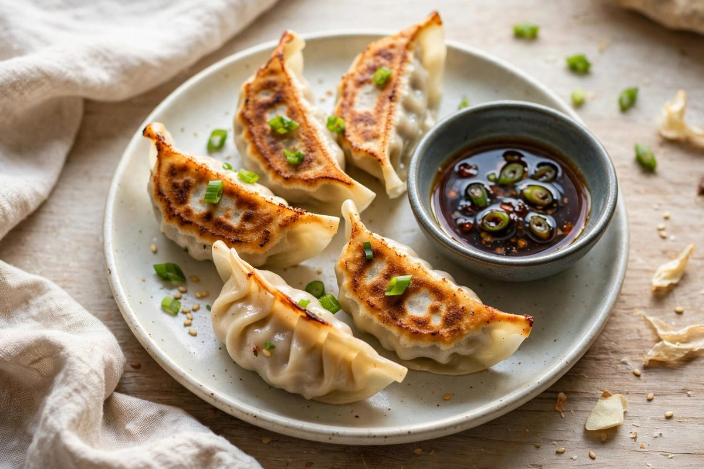

Gyoza — Japanese Pan-Fried Dumplings
How to make gyoza from scratch: filling, folding, frying, and the dipping sauce.
What gyoza are
Gyoza are Japanese dumplings with a thin wheat wrapper, filled with minced pork and cabbage, then pan-fried until the bottom is crisp and golden, steamed briefly, and fried again. The result is a dumpling that is crisp on the bottom, soft on top, and juicy inside. Gyoza came to Japan from China, but the Japanese version is distinct: the filling is more finely minced, the wrapper is thinner, and the cooking method, fry-steam-fry, is specific to gyoza. They are a popular home and restaurant food, and making them is a satisfying weekend project.
The filling
A classic filling is minced pork, finely shredded cabbage, spring onion, garlic, ginger, soy sauce, sesame oil, and a little salt. Salt the cabbage and squeeze out the water first, so the filling is not wet. Mix the filling in one direction until it becomes sticky and holds together; this helps the dumplings stay juicy. Taste a small cooked piece of filling before wrapping the whole batch, and adjust the seasoning. Vegetarian fillings with mushrooms, tofu, and cabbage work well with the same method.
Wrapping and folding
Place about a teaspoon of filling in the centre of a round wrapper, wet the edge with water, and fold it in half. Pleat one side: make three or four small folds along the edge, pressing to seal, and leave the other side smooth. The pleats are not just decoration; they help the dumpling hold its shape. Ready-made gyoza wrappers are widely available and save a lot of time, though you can make your own from flour and water. Your first dumplings will look uneven, and that is normal; by the tenth, the folding becomes natural.
The fry-steam-fry method
Heat a little oil in a non-stick frying pan with a lid, place the gyoza flat-side down in a single layer, and fry for two minutes until the bottoms are golden. Add about 60 ml of water, cover immediately, and steam for three minutes. Remove the lid, let the remaining water evaporate, and add a drizzle of sesame oil around the edge to crisp the bottoms again. The three stages matter: frying gives colour, steaming cooks the filling, and the final fry gives the crunch. Do not skip the lid, and do not move the dumplings once they are in the pan.
Dipping sauce
The standard dipping sauce is equal parts soy sauce and rice vinegar with a few drops of chilli oil. Mix it fresh and serve it in a small dish. Some people add grated garlic or a little sesame oil. Dip the crisp bottom into the sauce, not the whole dumpling. Gyoza are best eaten hot, straight from the pan, so cook them in batches and serve as you go rather than cooking all of them at once and letting them sit.
Making ahead and freezing
Gyoza freeze well before cooking. Place the wrapped dumplings on a tray so they do not touch, freeze until solid, then transfer to a bag. Cook from frozen with the same method, adding a minute or two to the steaming time. Making a large batch and freezing half is a good use of an afternoon, because the wrapping is the slow part. Cooked gyoza do not reheat well, so freeze them raw. A batch of homemade gyoza in the freezer is one of the best quick dinners you can have.
Frequently Asked Questions
Can I use shop-bought wrappers?
Yes. Ready-made gyoza wrappers are widely available and save a lot of time. Look for thin round wrappers, not wonton wrappers, which are square and thinner.
Why do my gyoza stick to the pan?
The pan may not have been hot enough when the dumplings went in, or the dumplings may have been moved during frying. Use a good non-stick pan, hot oil, and leave them alone until the bottoms are set.
Can I make gyoza vegetarian?
Yes. A filling of mushrooms, cabbage, firm tofu, spring onion, and ginger works very well. Squeeze the water from the vegetables first so the filling is not wet.